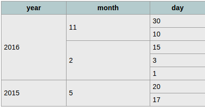
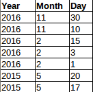
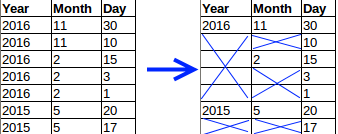

Row span with PureScript pux and JavaScript redux
Row spans
I’ve always found creating tables that need rowspans a bit awkward. Having to skip TDs in the rows means that the logic to create each row can get a bit ugly. Typically I just want to map over an array of and get an array of TDs. Fortunately its quite easy to create a function to help make this easier. To keep it interesting I’m going to implement it in PureScript and JavaScript and compare a Haskell version of the function too.
The data
As an example imagine I have a set of data to display that shows the days an event occurred per month per day. Starting at the end, this is what I want the result to look like. You can see that the each year spans over the months + days and each month spans over the days.

PureScript
Here is how the data could be represented in PureScript using records
let dates = [{year:2016
,months:[{month:11
,days:[{day:30}
,{day:10}
]
}
,{month:2
,days:[{day:15}
,{day:3}
,{day:1}
]
}
]
}
,{year:2015
,months:[{month:5
,days:[{day:20}
,{day:17}
]
}
]
}
]Now we need something to map this data to. The simplest thing to do is to map it to a structure where each row contains the same number of columns and have a secondary function manage the shenanigans of omitting TDs that are spanned over.
Here is a definition for the row and column types
Each row has columns and each column has a span. PureScript has extensible record types that support row polymorphism. What that means here is that we can define a function that accepts these types but the data actually passed to the function can be a superset of the required values. React for example needs a unique element id and obviously each column needs a value to be displayed. Rather than forcing this on the user of the rowSpan algorithm however we just get PureScript to check for the actual fields we need and let the caller add whatever extra data they need.
Here is a function to take the data above and creates an array of Rows.
let rowData = concat $ concat $ map
(\y -> map
(\m -> map
(\d -> {rid:y.year * 100 + m.month
,cols:[{val:show y.year, span:length $ concat $ map (\a -> a.days) y.months}
,{val:show m.month, span:length m.days}
,{val:show d.day, span:1}
]
})
m.days)
y.months)
datesThe result of this is an array of Rows. I.e. the data has been flattened and looks something like this

Each Row has a rid (row id) field. Each column has a val (value) and a span field. The Col’s val contains the text to display and the span is the number of columns to span. This is simple to calculate. For months its the number of days in that month, for a year its the total number of days in all months in the year.
The rowSpan algorithm
Given a grid of data (Array of Row) we need a function that can remove the cols that are to be spanned over. This result can then be mapped over to generate the required TRs and TDs.
Effectively the function must do this

Here is one way to achieve this
- For each column have a collapse integer showing how many more times the col in its position should be skipped
- Start with a 0 for each column, i.e. the first row always has all the columns
- For each col in a row
- If collapse is zero then
- Include the column.
- Use the span from the Col as the next collapse value
- Else if collapse is not zero then
- Ignore the column
- Use the collapse value minus one as the next collapse value
- If collapse is zero then
In the image below you can see the grid with the initial collapse value per row. As above notice that a column is removed unless the collapse value is zero.

And here is the PureScript code to do this
collapseTableArray :: forall r c. Array (Row r c) -> Array (Row r c)
collapseTableArray rows =
-- | To create the initial collapse array, we need to know the number of cols in a row
-- | Get the number of cols in each row and then get the minimum value
-- | PureScript being safe ensures that the empty list case is handled
case minimum $ (\r -> length r.cols) <$> rows of
Just m ->
-- | Initial collapse array of zeros
let collapse = replicate m 0 in
-- | fold rows with collapseRow
let fixed = foldl collapseRow {collapse: collapse, st: []} rows in
fixed.st
_ -> []
where
-- | The fold function
collapseRow :: forall rr cc ss. (CollapseState rr cc ss) -> Row rr cc -> (CollapseState rr cc ss)
collapseRow state row =
-- | Zip the previous collapse array and the current cols array
-- | This results in an array of [collapse, col]
let skipCols = zip state.collapse row.cols in
-- | Get all cols where the collapse value is less than 1
-- | First the list is filtered by checking the collapse value (fst in array)
-- | Then snd is called (fmapped over) each itemm to get only the column
-- | Note that this results in the selected columns being unaltered and all additional information (fields)
-- | in the columns being retained
let nextCols = snd <$> filter (\t -> fst t <= 0) skipCols in
-- | If current collapse is zero then next skip is the span value - 1 else its collapse - 1
let nextSkip = map (\t -> if fst t == 0 then (snd t).span - 1 else (fst t) - 1) skipCols in
-- | Construct the row, change only the cols
-- | Again, note that the other fields in the row are returned unaltered
let resRow = row { cols = nextCols } in
-- | Next state
state {collapse = nextSkip, st = snoc state.st resRow }Finally here is the Pux code to generate the HTML from the result of collapseTableArray
getTable :: forall a. Html a
getTable =
let rowData = -- See above
let c = collapseTableArray rowData in
let tableRows = map buildRow c in
div
[]
[table
[]
[thead
[]
[tr
[]
[th [] [text "year"]
,th [] [text "month"]
,th [] [text "day"]
]
]
,tbody
[]
(buildRow <$> c)
]
]
where
buildRow r =
tr
[]
(buildCol <$> r.cols)
buildCol c =
td
[attr "rowSpan" c.span]
[text $ c.val]JavaScript and Redux
Here is what that would look like in JavaScript. The example uses Redux (react-redux) for the rendering and Ramda for the functional programming features. The code is compiled with babel with ES2015 syntax and the object spread operator enabled.
The data looks very similar to the PureScript data.
[{year:2016,
months:[{month:11,
days:[{day:30},
{day:10}
]
},
{month:2,
days:[{day:15},
{day:3},
{day:1}
]
}
]
},
{year:2015,
months:[{month:5,
days:[{day:20},
{day:17}
]
}
]
}
];As with the PureScript example the first step is to create a flattened grid of the data and then call collapseTableArray on it.
const daysInYear = y => R.flatten( R.map( m => m.days, y.months ) );
const rows = R.flatten( R.map(
y => R.map(
m => R.map(
d => ({rowId: y.year + "." + m.month + "." + d.day,
cols:[{val: y.year, span: daysInYear(y).length}
,{val: m.month, span: m.days.length}
,{val: d.day, span: 1}
]
}),
m.days ),
y.months ),
data )
);
var collapsed = collapseTableArray( rows );The JavaScript version of the collapseTableArray function works in exactly the same way. Using Rambda and the ES2015 syntax (lambdas, destructuring etc) allows the JavaScript code to be nice and functional.
const collapseTableArray = (tableArray) => {
if( R.isEmpty(tableArray) ){
return [];
}
//First collapse array is just a 0 for each col on first row
var collapse = R.map( a => 0, tableArray[0].cols );
var fixed = R.reduce(
([skip, acc],row) => {
//combine the skip list and cols
const skipCols = R.zip( skip, row.cols )
//Get the col that should not be skipped (2nd item from each of the filtered pair)
const nextCols = R.map( p => p[1], R.filter( f => f[0] <= 0, skipCols ) )
//Calculate next skip. Look at prev skip, use the rowSpan from tableArray once the previous span has been used up
const nextSkip = R.map( p => p[0] == 0 ? p[1].span - 1 : p[0] - 1, skipCols )
const res = R.concat( acc, [{...row, cols:nextCols}] );
return [nextSkip, res];
},
[collapse,[]],
tableArray );
return fixed[1];
}Finally the data is rendered with react
return (
<div>
<table>
<thead>
<tr>
<th>Year</th>
<th>Month</th>
<th>Day</th>
</tr>
</thead>
<tbody>
{R.map( r => (<tr key={r.rowId}>
{R.map( c => (<td rowSpan={c.span} key={r.rowId + "." + c.val}>
{c.val}
</td>),
r.cols )}
</tr>),
collapsed )}
</tbody>
</table>
</div>
);Haskell
While I’ve not implemented the HTML rendering with GHCJS I think its interesting to compare the PureScript and Haskell version of the collapseTableArray functions
Starting with the Haskell types
data Col c = Col {span :: Int, cval :: c} deriving Show
data Row r c = Row {cols :: [Col c], rval :: r} deriving ShowHaskell does not have row polymorphism (e.g. extensible records) so to allow the Row and Col types to have user defined values I’ve used a record with type params
In this example I’m using Rid and Cval as defined below
The Haskell collapseTableArray is very similar to the PureScript version
-- | same as minimum but check for an empty list
minimumSafe :: Ord a => [a] -> Maybe a
minimumSafe xs =
case xs of
[] -> Nothing
_ -> Just $ minimum xs
collapseTableArray :: [Row r c] -> [Row r c]
collapseTableArray rows =
-- | To create the initial collapse array, we need to know the number of cols in a row
-- | Get the number of cols in each row and then get the minimum value
-- | Use minimumSafe to guard against an empty list
case minimumSafe $ (\r -> length $ cols r) <$> rows of
Just i ->
-- | Initial collapse array of zeros
let collapse = replicate i 0 in
-- | fold rows with collapseRow
let (c,res) = foldl collapseRow (collapse, []) rows in
res
_ ->
[]
where
-- | The fold function
collapseRow :: ([Int], [Row r c]) -> Row r c -> ([Int], [Row r c])
collapseRow (collapse, res) row =
-- | Zip the previous collapse array and the current cols array
-- | This results in a tuple of (collapse, col)
let skipCols = zip collapse $ cols row in
-- | Get all cols where the collapse value is less than 1
-- | First the list is filtered by checking the collapse value (the first value in the tuple)
-- | Then snd is called (fmapped over) each tuple to get only the column
let nextCols = snd <$> filter (\(c,_) -> c <= 0) skipCols in
-- | If current collapse is zero then next skip is the span value - 1 else its collapse - 1
let nextSkip = map (\(c,r) -> if c == 0 then (span r) - 1 else c - 1) skipCols in
-- | Construct the row, change only the cols
let resRow = row { cols = nextCols } in
(nextSkip, res <> [resRow])A few differences to note from PureScript
deriving showmakes printing values easy. The sample project prints the result to the console- minimum is not safe by default, so I’m using a custom safeMinimum to check for empty lists
- Support for tuples and tuple destructuring
- record functions to get values rather than field access
Overall though the differences are small.
Building the sample projects
All the code for the examples is on github
- PureScript
- In the ps directory run
setupPs.sh - Run
pulp buildto build - Run
npm sttartto build and run the site. - Browse to http://localhost:3000/
- In the ps directory run
- JavaScript
- In the js directory run
setupBable.sh - Run
runBabelAndWatch.shto build the bable js - Start a web server in the js/demo directory (e.g. node’s http-server)
- In the js directory run
- Haskell
- Ensure you have stack installed
- In the hs directory run
stack build - Run
buildAndRun.sh